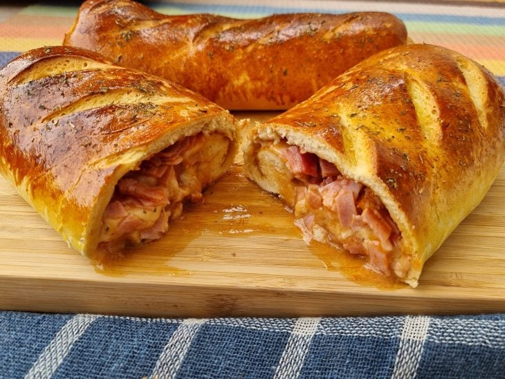
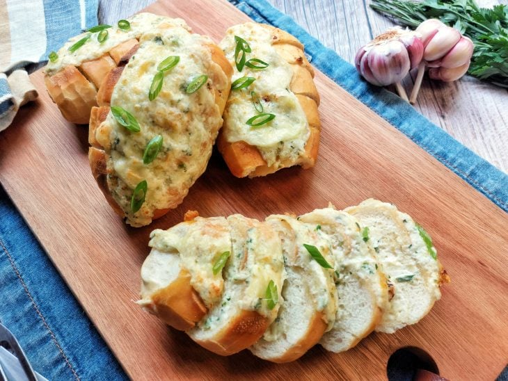
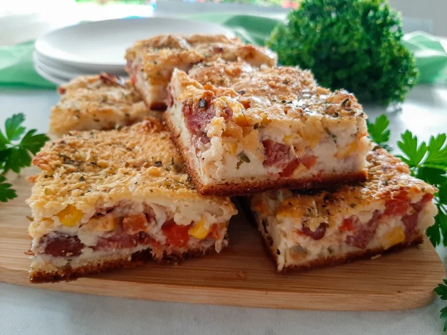
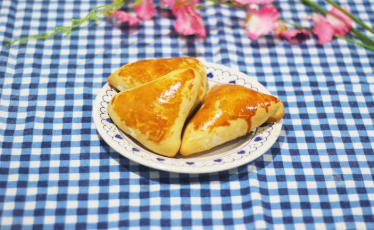

|  |
INGREDIENTES
- 1 sachê (10 gramas) de fermento biológico instantâneo seco (ou 30 gramas do fermento biológico fresco)
- 1 colher de sopa de açúcar
- 1 xícara de chá de leite morno
- 1 ovo
- 2 colheres de sopa de manteiga ou margarina em temperatura ambiente
- Cerca de 500 gramas de farinha de trigo
- 1 colher de chá (rasa) de sal
|
|  |
INGREDIENTES
- 4 pães
- 3 colheres de sopa de maionese
- 3 dentes de alho espremidos
- 2 colheres de sopa de manteiga (ou margarina)
- 2 colheres de sopa de queijo parmesão ralado
- 120 gramas de queijo mussarela ralado
- Ervas de sua preferência e a gosto (opcional)
|
|  |
INGREDIENTES
- 800 gramas de calabresa
- 500 gramas de batata-bolinha
- 5 dentes de alho
- Sal e pimenta-do-reino a gosto
- 1 colher de chá de pimenta calabresa
- Suco de 1/2 limão
- 3 colheres de sopa de azeite
|
|  |
INGREDIENTES
- 1 colher de sopa de azeite
- 1 colher de sopa de manteiga
- 1/2 cebola picada
- 500 gramas de carne picada
- 1 colher de chá de sal
- Pimenta-do-reino a gosto
- 1 colher de sopa de molho inglês
- 1 colher de sopa de mostarda
- 1 colher de sopa de ketchup
- 2 tomates sem pele e sem sementes picados
- 1/2 xícara de chá de champignon
- 1 lata de creme de leite sem soro (300 gramas)
|